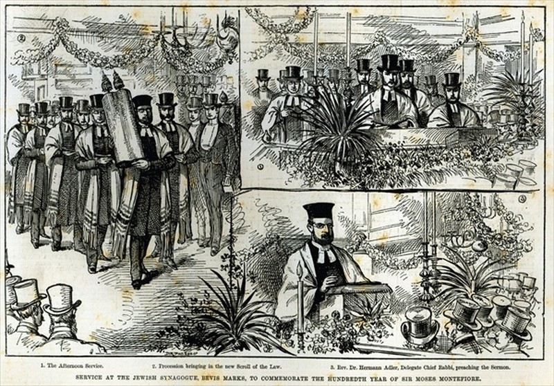
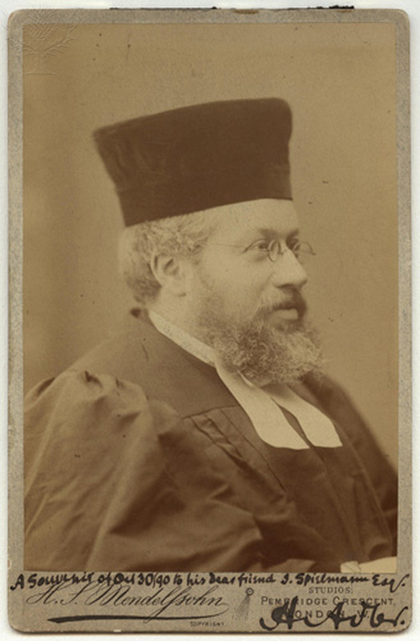
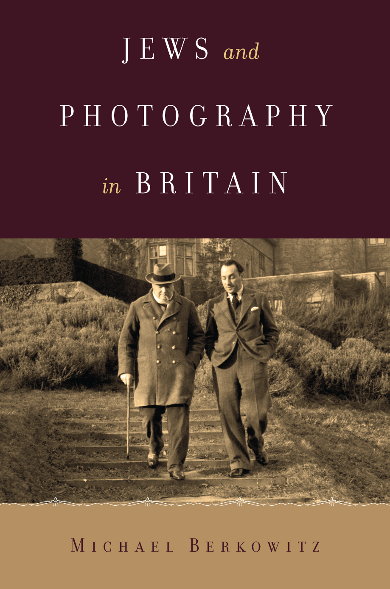

Of course it’s a good idea to visit Bevis Marks synagogue. It’s the opposite direction from Sandys Row (synagogue) and Dirty Dicks (pub), going south on Bishopsgate. It’s beautiful and interesting. There is little need to talk about it here. They have their own website which probably cost them a fortune. It’s fabulous for understanding their own self-image. It could be the one of the more pretentious websites of all time, sonorous music and all that. The link to the website is here: http://www.bevismarks.org.uk/ }

Image: This postcard recalls the service held to celebrate the one-hundreth birthday of Sir Moses Montefiore at Bevis Marks in 1884. It also depicts Hermann Adler
Related to the above postcard: here’s a fabulous project at UCL on the ‘Montefiore testimonials’ directed by the dashing Dr Francois Guesnet.
The link is here: http://www.ucl.ac.uk/hebrew-jewish/newsandevents/past-events/Montefiore
Here’s a postcard of the Chief Rabbi at the time, pictured in the postcard (of Bevis Marks synagogue, 1894), Hermann Adler (1839-1911). It was taken and produced by one of the many Jewish photographers active in the London at the time, H.S. Mendelssohn. In fact, Jews may have constituted the majority of London photographers almost from the inception of the field in the mid-nineteenth century to the 1950s and 60s.

On more information about Jewish photography, see Michael Berkowitz, Jews and photography in Britain (Austin: University of Texas Press, 2015) for more information.

There is a street (possibly) named after him off the Whitechapel High Street, just west of the Whitechapel Foundry.